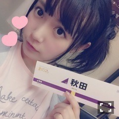
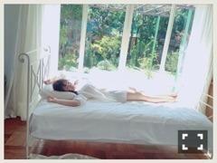
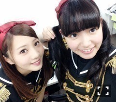

| 2016/04 25 Mon | ひめたん-0o0-その631 |
アンダーライブ東北シリーズ
6公演無事終わりました！

青森シールもゲット出来たら一緒に写メ撮るね( ˆωˆ )
今回のアンダーライブは
毎回新しい会場での一発勝負。
だから新たな、真っさらな気持ちで
ステージに立つことが出来たし
たくさん学んだ6公演でした。
全国ツアーをやります、と
初めに聞いた昨年の12月からの
長い長いプロジェクト
もちろん名古屋公演から含めてのことだし
これからも続くんだろうけど
この東北シリーズで一旦休憩かな。
今回のアンダーライブは
今までとは違ったアプローチの仕方を
してみました
東北シリーズを通して
私たちが身につけたかったスキルは
「表現力」というザックリとしたもの。
その大きな主軸のもと
ライブ全体にひとつのストーリー性を
持たせることで
私たちが持っている楽曲の
違う引き出しを開けてみよう、なのか
本来楽曲が持つ色を改めて感じよう、なのか
文で説明するのは難しいのですが
とにかく今までとはスタンスが異なる
パフォーマンスになったと思います。
今までのアンダーライブを知っている方に
今回のライブがどう映ったかというのは
それぞれあると思いますが
いつものライブが割と
全力で、がむしゃらに、汗をかいて、
みたいなイメージだとしたら今回は
"静"と"動"のコントラストが
ハッキリしている
そんなステージングにしていただきました。
初めましての方にとっては
ある種の「乃木坂らしさ」なのかな、
一曲一曲に寄り添って
改めて、乃木坂の楽曲の良さを皆さんに
伝えられたらいいなといいますか
アンダーライブが2年の時を経て
一度原点回帰してみるとどうなるのかな、
そんな空間になったと思います。
東京を飛び出して
全国をまわりましょう、それも
アンダーライブとして......
とんだ重責を任されたなと思いました。
乃木坂46を代表して行くわけなので
このグループへの第一印象を
良くも悪くも与えてしまう、私たちが、と。
だからプレッシャーもありましたが
ライブが終わった日の夜ホテルに帰って
コメントを読んでいると
「僕の私の地元に来てくれてありがとう」
「初の乃木坂のライブ、楽しかったです」
そんな言葉を残して下さる方が
たくさんいらっしゃいました
嬉しかった（ ; ; ）
このライブを機に
乃木坂46に、アンダーメンバーに、
そして私たちひとりひとりに
興味を持って下さったら嬉しいです。
れなちさん、蘭世、琴子、
いつか19人フルメンバーで
「不等号」歌いましょう！
私たちの可能性を信じて
このツアーを企画して下さった
スタッフの皆さんありがとうございました。
そして、何より、
ライブに足を運んで下さった皆さん、
遠くから応援して下さった皆さん、
本当にありがとうございました！！

生駒ちゃん！
このツアーが決まった時
誰よりも喜んで、応援してくれました！
無事終わったよー(・∀・)♡
日曜の夜は、らじらー！サンデー
ゲストは声優アーツに三森すずこさん
乃木坂からは星野みなみちゃんが登場。
募集中のメールテーマは
◯みなみちゃんへのメッセージ
◯僕の妹はNo.1対決
◯オリひめトークセッション
◯ひとりノリひめたん
......ん？まじ？
ひとりノリひめたんやるの？
新年度になったのに
このコーナーなんで残っちゃったのかしら。
お便りの宛先はこちら！
◯BRODY
アンダーメンバー×自転車
みんなの個性が詰まった
ページにして頂きました！
一応乗ってみたんだけれど、操縦が下手で
撮影中ご迷惑おかけしました( >_< )
ツーリングしたくなった！
◯UTB

テーマは「若妻」だそう。
なので旦那さんになった気分で見て下さい
あーこれ自分で言うの恥ずかしいやつや。
私の大人っぽい顔、幼い顔、どちらも
楽しんでもらえるかなと(´｡•ω•｡`)
◯B.L.T.

上京してきたばかりの女の子です。
夢を追って一歩踏み出した
前向きな気持ちや
故郷を離れてきた寂しさなどなど
共感できる方もいらっしゃるかしら？
実際私もそのひとり( ˆωˆ )
～お知らせ～
4/26 ヤングチャンピオン
4/27 ラジオ番組表2016春号
4/30 月刊エンタメ
5/5 発掘！お宝ガレリア
5/8 BOMB
明日発売のヤングチャンピオンさん
表紙＋巻頭グラビア撮っていただきました！
明日だよ！明日！もう一度言うよ明日だよ！
公式Twitterで
表紙が公開されてますので
是非見てみて下さいませ。
どうやら私のポスターに
クリアファイルまで付いてきちゃうそう
素敵過ぎる。需要あるかしら......。
アイドルとして撮っていただく
グラビアのお仕事好き♡

2ndアルバムの収録曲が
発表になりましたね
私が歌っているのは
◯欲望のリインカーネーション
(1期生アンダーメンバー楽曲・全type共通)
◯失恋したら、顔を洗え！
(乃木團楽曲・type-C収録)
です！どちらも素敵な曲です！
(＊´・ω・＊)
コメント(900)
2016/04/25 23:12